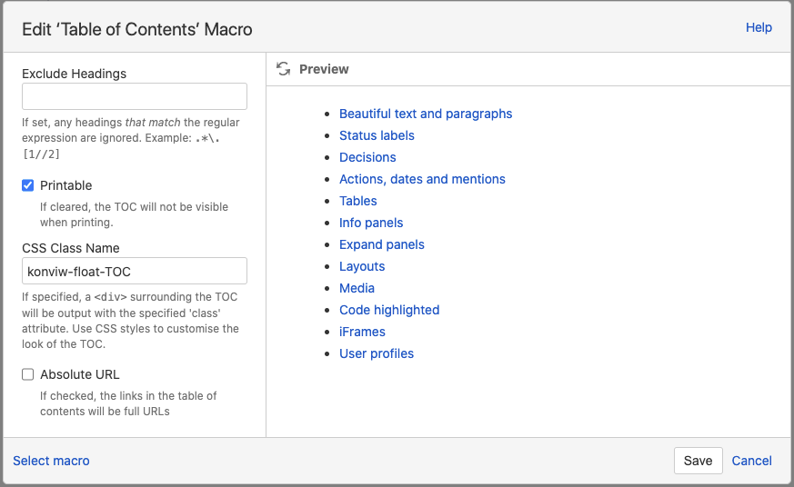
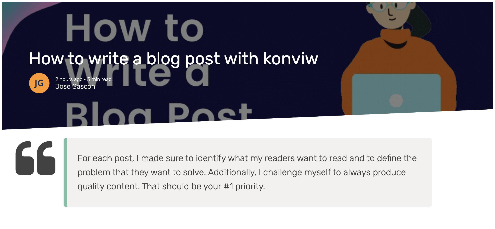

# Getting started
After following the installation and configuration steps you can render any Confluence page composing
CPV_BASEHOST:PORT + CPV_BASEPATH + /wiki/spaces/ + spaceKey + /pages/ + pageId
Or similarly for any Confluence URL like:
https://konviw.atlassian.net/wiki/spaces/KONVIW/pages/32981/Introduction+to+Konviw (opens new window)
just replace the begining of the URL by your custom Konviw domain like:
CPV_BASEHOST:PORT + CPV_BASEPATH + /wiki/spaces/KONVIW/pages/32981/Introduction+to+Konviw
for example https://konviw.vercel.app/cpv/wiki/spaces/konviw/pages/32981 (opens new window)
# Formating your page
# Text
Any text in bold or italics, with colors or combination of bullet points and number lists will render beautifully with Konviw.
# Column layouts
konviw will display just fine both 2 column layouts and 3 column layout including full wide view or narrow view.
# Emojis
The HTML5 specification encourages to use the UTF-8 character set, which covers almost all of the characters and symbols in the world!
As Konviw use UTF-8 in the meta tag:
<meta charset="UTF-8" />
we can use any emoji availalble directly from the Keyboard in Mac (via cmd + ctrl + space) or in Windows (via key Win + ;).
WARNING
While you can use most of the Confluence emoticons available en the Atlassian toolbar, we encourage to use standard UTF-8 emojis as they are worldwide standard and will display well in any device.
In addition standard UTF-8 emojis work also fine in the title of the pages while Confluence emojis just work in the page body.
# Action items
Action items will be rendered via Konviw as checked or unchecked standard checkboxes.
# Code
Display beautiful code is stratight forward with Konviw, just use the Code Snippet from Confluence toolbar in edit mode and place your code.
For syntax highlight Konview users the library Highlight.js (opens new window) a JavaScript syntax highlighter with language auto-detection.
# Media files
Images and .gif files just work and come by default with a nice zooming effect so you can maximize the image to the whole viewport size. Zoom is disable when you scroll or click on the image.
To disable the zoom effect (for example in very small images) include the text (nozoom) in the Alt property of the image.
Videos uploaded in a Confluence page will work straight forward in modern browsers thanks to the HTML tag <video>.
Konviw will detect your draw.io diagrams and present the .png view automatically generated by Confluence and stored as an attachment. This feature is experimental as sometimes Confluence mess around the names of the .png views and the diagrams.
# Advance features
# Floating TOC
You do not like the classical TOC (Table of Content) that Confluence shows inline in your page because you have to go back to the top to see it. This will be your favourite feature soon.
Now you can hide the classic TOC and make it visible on demand as part of a floating button that will show up in the top right page of your pages.
How to activate it? Edit the properties of the ‘Table of Contents’ macro and add ‘konviw-float-TOC’ in the CSS Class Name property, like in the example below.

# Embedded konviw pages in iframes
You can simply embed your konviw pages in websites, MS Teams tabs or in other applications via iframes. To provide advance integration features konviw automatically pushes some post messages with metadata to the parent window and also provides several methods for auto-resizing so you can resize the iframe dynamically or display the Url being loaded in the iframe.
The variables passed from konviw to the parent page are:
konviwFrameUrlwith the full page UrlkonviwSpaceKeyof the space keykonviwPageIdwith the ID of the pagekonviwTitleof the pagekonviwExcerptof the page
Use load the JavaScript library iFrame-Resizer so you can automatically resize the iframes where konviw is loaded.
As an example of implementation you have to provide a unique id for each iframe, the url of the konviw page and load iframe-resizer true a custom method function:
<iframe
:id="iframeId"
:src="url"
@load="iframeLoaded(iframeId)"
scrolling="no"
class="konviw--page"
/>
For instance you can retrieve metadata in a Vue component with a method like this:
methods: {
iframeLoaded(iframeId) {
iFrameResize(
{
log: false,
checkOrigin: false,
onMessage: (messageData) => {
// Callback fn when message is received
this.msgPageId = messageData.message.konviwPageId;
this.msgTitle = messageData.message.konviwTitle;
this.msgExcerpt = messageData.message.konviwExcerpt;
this.msgIframeUrl = messageData.message.konviwFrameUrl;
this.msgSpaceKey = messageData.message.konviwSpaceKey;
},
},
`#${iframeId}`,
);
},
},
You can find a great example of this implementation with 3 iframes in the Architecture page
# Use Jira Macro in konviw pages
When you use Jira macro in your Conflence pages they will be also visible as dynamic tables in konviw.
We use the awesome open-source JavaScript table plugin Grid.js (opens new window) to render the table with the Jira tickets. It comes out of the box with sorting by column and search by keywords 🤪.
Konviw will render the table with the same columns selected in the Jira macro and using the JQL or filter defined in the macro.
The access to the Jira API works with the same variables used for Confluence API.
Check in the demo section in this documentation a konviw page with a Jira table embedded.
# Cache management
By default Konviw comes with an in-memory cache for both pages and API endpoints.
You can manually specify a TTL (expiration time) for the cache, via the env variable:
CACHE_TTL = 86400 # Default to 24h
In some cases you may want to skip the cache to force to render a page with the last content served from the Confluence API. In those cases use the parameter cache=no-cache.
# Add comments to pages
We will use Utterances (opens new window) to host comments in GitHub and linked to konviw pages.
Follow the installation and configuration instructions from their website.
You can add the following Vue component that will match a set of comments to the pageId passed as props.
// .vuepress/components/Comment.vue
<template>
<div ref="comment"></div>
</template>
<script>
export default {
props: {
pageId: { type: String, required: true },
},
mounted() {
const utterances = document.createElement('script');
utterances.type = 'text/javascript';
utterances.async = true;
utterances.crossorigin = 'anonymous';
utterances.src = 'https://utteranc.es/client.js';
utterances.setAttribute('issue-term', this.pageId); // pathname|url|title|og:title
utterances.setAttribute('theme', 'github-light'); // theme
utterances.setAttribute('repo', 'Sanofi-IADC/konviw-comments'); // repository
this.$refs.comment.appendChild(utterances);
},
};
</script>
Now, for instance in VuePress you can add this component to any markdown page, like follows:
---
title: Demo Comments
---
<ConfluencePage pageId='32981'/>
<Comment pageId='32981'/>
You can find an example of this implementation in the demo comments page.
# Turn pages into beatiful blog posts
How to create your first blog post in Confluence and publish it via Konviw.
⓵ Make sure you are in the space you want to save your blog posts.
⓶ Click on Create to create a new page.
⓷ Select Blog post as template.
⓸ You will see that the position of the page change to Blog / Year / Month / Day
which means that you are ready to go following the next steps and recommendations in this post.
Then you can start writing the main body of the article or post as per your own style, preference and according to the story you want to share.
To add a header banner with a nice image make sure the first element in the document is a “Page Properties” macro as showed in this example with an image and a blockquote headline.

Which will be processed and rendered via Konviw as follows:

Check in the demo section in this documentation an online example with blog post.
Like for any other Confluence page you can render the blog posts also composing the following URL:
CPV_BASEHOST:PORT + CPV_BASEPATH + /wiki/spaces/ + spaceKey + /pages/ + pageId
or alternatively with the Confluence blog post notation:
CPV_BASEHOST:PORT + CPV_BASEPATH + /wiki/spaces/ + spaceKey + /blog/ + year + / + month + / + day + / + pageId
you may also add the slug with the title of the page (like it's done by Confluence) while this is ignored by Konviw.
So for any blog post in Confluence like:
https://konviw.atlassian.net/wiki/spaces/KONVIW/blog/2021/04/04/10387469/How+to+write+a+blog+post+with+konviw (opens new window)
just replace the begining of the URL by your custom Konviw domain like:
CPV_BASEHOST:PORT + CPV_BASEPATH + /wiki/spaces/konviw/blog/2021/04/04/10387469?type=blog
For the blog post above both URL examples will render the same result:
- https://konviw.vercel.app/cpv/wiki/spaces/konviw/blog/2021/04/04/10387469?type=blog (opens new window)
- https://konviw.vercel.app/cpv/wiki/spaces/konviw/pages/10387469?type=blog (opens new window)
The parameter type is used to define the header format for the page and accept 3 values:
blogto display the blog header image and headline textnotitleto avoid the title in the header. See example without titletitleor undefined will render the standard Konviw page with just title
# Link images and media
Konviw also renders your media files and images, so you can combine other publishing tools like Wordpress and place your images directly from Confluence.
For example the following image is from the Architecture page and it is composed by the following structure:
CPV_BASEHOST:PORT + CPV_BASEPATH + /wiki/download/attachments/ + pageId +/+ file name

# Turn pages into online web presentations
You can mix content that will be visible into slides and content which will stay visible only in the page mode.
Every slide is contained within the frame of a Confluence macro Page Properties like in the following example:

Use heading 1 for your cover slides or to create intermediate sections in your slide deck.

Use heading 2 for the default and most common slides.

And you have a 3rd type of slides with the heading 3 which display the title as bubble comment.

Add an image as the first object in your Page Properties macro to display it full size as background for the current slide.
So for any Confluence page with slides like :
https://konviw.atlassian.net/wiki/spaces/KONVIW/pages/14647304/Slides (opens new window)
just replace the begining of the URL by your custom Konviw domain like:
CPV_BASEHOST:PORT + CPV_BASEPATH + /wiki/slides/konviw/ + PageID + ?theme=konviw
You can define custom themes and select your favorite with the param theme.
Examples:
- https://konviw.vercel.app/cpv/wiki/slides/konviw/14647304?theme=konviw (opens new window)
- https://konviw.vercel.app/cpv/wiki/slides/konviw/14647304?theme=iadc (opens new window)
You can read a konviw page with instructions to create web slides from your Confluence content in the demo section of these docs.
# Add charts to pages
The Chart macro allows you to display a chart based on tabular data. When you add the macro to a page, you:
- supply the data to be charted by the macro as a table in the placeholder of the macro.
- edit the macro parameters in the Macro Browser to configure the format of the chart.
To display charts in konviw pages you have to set up the advanced options for chart versioning and generate images to be saved as an attachment.
Parameter: Attachment
The name and location with which the chart image will be saved as an attachment. Currently konviw only supports the first option:
^attachmentName.png— the chart is saved as an attachment to the current page.page^attachmentName.png— the chart is saved as an attachment to the page name provided.space:page^attachmentName.png— the chart is saved as an attachment to the page name provided in the space indicated.
Parameter: Attachment Version
Defines the the versioning mechanism for saved charts. For optimal behaviour in konviw select replace.
new— creates new version of the attachment.replace— replaces all previous versions of the chart. To replace an existing attachment, the user must be authorized to remove attachments for the page specified.keep— only saves a new attachment if an existing export of the same name does not exist. An existing attachment will not be changed or updated.

You can read the full documentation of how to insert the chart macro and attachment parameters (opens new window).